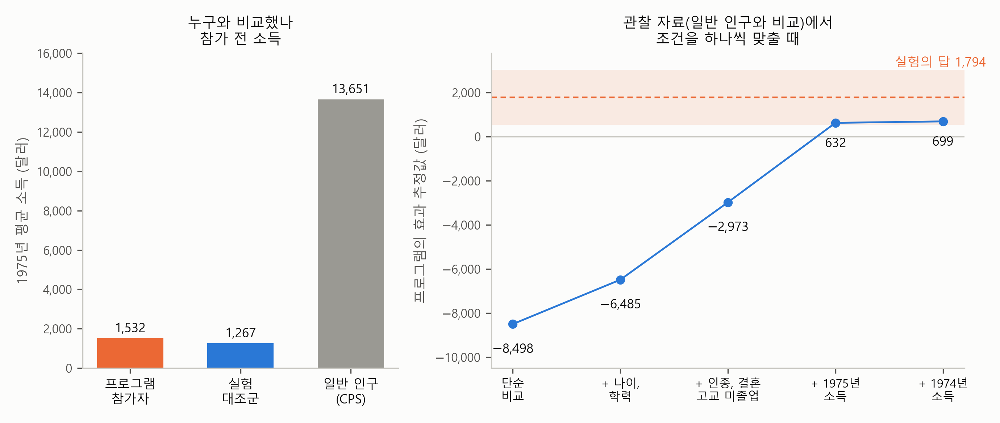

1. 보고서 — 일자리 제공 프로그램은 소득을 올렸나#
이번 장의 주제는 인과 효과입니다. “이것을 하면 저것이 달라지는가”를 묻는 질문이죠. 이 정책을 시행하면 실업이 줄어드는가, 이 약을 먹으면 병이 낫는가, 이 광고를 내보내면 매출이 오르는가, 이 교육 프로그램을 들으면 성적이 오르는가. 학술 연구가 가장 알고 싶어 하는 것도, 정부나 기업이 돈을 쓸지 말지 정할 때 가장 궁금한 것도 결국 이런 질문입니다. 단순회귀분석 장과 다중회귀분석 장에서 본 보고서는 “무엇이 가격의 차이를 설명하는가”를 물었습니다. 이번 장의 보고서는 한 걸음 더 나아가 “무엇이 결과를 바꾸는가”를 묻습니다.
예전에는 이 분석을 직접 배워 직접 돌려야 했습니다. 요즘은 AI에게 데이터를 넣어 주고 분석해 달라고 하면 금방 해줍니다. 우리는 AI가 만들어 준 보고서를 잘 이해하고, 잘 점검하면 됩니다. AI가 해 주는 것, 잘 이해하기. 그게 우리의 일입니다.
그런데 이번 장의 질문에서는 “잘 점검하기”가 특히 중요합니다. 다중회귀분석 장의 보고서는 마지막 줄에 “이 결과는 상관이지 인과가 아니다”라고 적어 두었습니다. 이번 장은 그 한 줄을 정면으로 다룹니다. 이번 장의 예시는 일자리 제공 프로그램과 소득입니다. 일자리를 얻기 어려운 사람에게 일자리를 마련해 주면, 그 사람의 소득이 나중에 정말 오르는가 하는 질문입니다.
자료로 인과 효과를 따지는 일을 인과 추론(causal inference)이라고 부릅니다. 인과 추론은 한 장으로 끝나지 않습니다. 공정한 비교를 찾는 방법이 다양하고, 방법마다 맞는 자료와 필요한 가정이 다릅니다. 이 책은 그 방법들을 여러 장에 걸쳐 다루고, 이번 장이 그 출발점입니다. 그래서 이번 장은 분석을 아주 단순하게 하는 대신, 인과를 따질 때 쓰는 생각과 용어를 넓게 모아 둡니다. 효과란 무엇인가, 비교 상대는 왜 엉뚱해지는가, 무엇을 같게 맞추고 무엇은 맞추면 안 되는가, 실험이 없을 때는 어떤 비교를 찾는가. 이 장의 마지막 절에서는 그 방법들을 지도 하나로 펼쳐 봅니다.
데이터 — 1970년대 미국의 한 실험#
이번 장의 자료는 50년쯤 전 미국에서 있었던 유명한 실험의 기록입니다. 이 자료가 어디서 왔는지를 아는 것이 이번 장을 이해하는 데 무엇보다 중요하므로, 조금 길게 소개하겠습니다.
일자리를 주는 프로그램#
1970년대 중반 미국 정부는 일자리를 얻기 가장 어려운 사람들을 돕는 방법을 찾고 있었습니다. 교도소에서 막 나온 사람, 마약 중독에서 회복 중인 사람, 학교를 그만두고 일도 하지 않는 청년, 오랫동안 복지 급여로 생활해 온 엄마들이었습니다. 이들에게 상담이나 구직 요령을 알려 주는 것만으로는 부족하다는 생각에서, 아예 일자리를 직접 주는 시범 사업이 시작됐습니다. 이름은 NSW(National Supported Work Demonstration)입니다. 1975년부터 1979년까지 미국 여러 도시에서 운영됐습니다. 앞으로 이 사업을 NSW라고 줄여 부르겠습니다. 이 장에서 여러 번 나오는 이름이니 기억해 두세요.
방식은 이렇습니다. 참가자는 12~18개월 동안 임금을 받으며 일합니다. 형편이 비슷한 사람들과 특별한 기술이 필요 없는 일을 했고, 감독자가 가까이서 지도했습니다. 처음에는 요구 수준을 낮게 잡고 조금씩 높여서, 일하는 습관이 몸에 붙게 했습니다. 기간이 끝나면 일반 일자리로 옮겨 가는 것이 목표였습니다.
한국에서 굳이 비슷한 제도를 찾는다면 자활근로를 들 수 있습니다. 일할 수 있는 저소득층에게 지역자활센터가 청소, 집수리, 재활용, 카페 같은 일자리를 마련해 임금을 주고, 그 경험을 발판으로 일반 취업으로 옮겨 가도록 돕는 제도입니다. 대상은 NSW와 다르지만, 상담이나 알선에 그치지 않고 일자리 자체를 준다는 점에서는 닮았습니다.
추첨으로 참가자를 정하다#
NSW가 유명해진 것은 사업 자체보다 효과를 확인한 방법 때문입니다. 프로그램에 신청해 자격 심사를 통과한 사람들을, 추첨을 통해 두 그룹으로 나눴습니다. 당첨된 사람은 NSW 일자리를 받았고, 떨어진 사람은 받지 못했습니다. 이때 떨어진 사람들이 다른 일을 구하거나 다른 도움을 찾는 것은 막지 않았습니다. 이렇게 추첨으로 나눈 두 그룹을 3년 가까이 추적해 면접으로 소득을 조사했습니다.
이번 장에서는 추첨에 당첨돼 일자리를 받은 사람들을 참가자, 추첨에서 떨어진 사람들을 실험 대조군(control group)이라고 부르겠습니다. 이 두 그룹은 같은 형편에서, 같은 프로그램을 신청하고, 같은 심사를 통과한 사람들입니다. 말하자면 같은 문을 두드린 사람들이고, 둘을 가른 것은 추첨 하나뿐입니다. 이 점이 왜 그렇게 중요한지가 이번 장 전체의 이야기입니다.
랄론드의 분석 — 실험의 정답과 회귀분석#
10년쯤 뒤인 1986년, 경제학자 로버트 랄론드(Robert LaLonde)가 이 실험 자료로 기발한 분석을 했습니다.[1] 실험이 없을 때 경제학자들이 흔히 쓰던 회귀분석을 믿어도 되는지 따져 본 것입니다.
생각은 단순합니다. NSW에는 추첨 덕분에 프로그램의 효과에 대한 정답이 있습니다. 추첨은 나이도 학력도 의지도 가리지 않으니, 당첨된 사람과 떨어진 사람은 프로그램에 참가했느냐 말고는 평균적으로 비슷합니다. 그러니 나중에 두 그룹의 소득이 벌어졌다면 그 차이는 프로그램 때문이라고 볼 수밖에 없습니다.
랄론드의 분석은 다름 아니라, 이 정답을 회귀분석 결과와 맞혀 본 것입니다. 회귀분석으로 프로그램의 효과를 구해 보고, 그 값을 추첨으로 이미 알고 있는 정답과 맞춰 봅니다. 정답과 비슷하면 회귀분석을 믿을 만하고, 크게 다르면 믿기 어렵습니다.
방법은 이렇습니다. 회귀분석에는 참가자와 실험 대조군의 자료를 쓰지 않습니다. 참가자는 그대로 두고, 실험 대조군 대신 실험과 상관없는 일반 사람들을 넣습니다. 실험 대조군은 정답을 구하는 데만 씁니다. 일반 사람들의 자료는 미국 정부가 달마다 가구를 뽑아 일자리와 소득을 묻는 조사(CPS, Current Population Survey)에서 가져왔습니다. 그런 다음 참가자와 일반 사람들을 한 자료로 합치고, 참가했으면 1, 아니면 0인 더미 변수와 나이, 학력, 참가 전 소득 같은 변수를 함께 넣어 회귀분석을 합니다. 이때 더미 변수의 계수가 회귀분석이 내놓는 프로그램의 효과입니다.
왜 이런 분석을 했을까요? 현실에서는 실험이 드물기 때문입니다. 정부의 프로그램은 대부분 추첨 없이 운영되고, 연구자 손에 들어오는 것은 참가자의 기록과 일반 인구의 기록뿐입니다. 이렇게 세상에서 일어난 일을 그대로 기록한 자료를 관찰 자료(observational data)라고 부릅니다. 관찰 자료로 회귀분석을 하면 효과를 맞힐 수 있을까요? 보통은 맞혔는지 확인할 길이 없습니다. 그런데 NSW에는 정답이 있었습니다. 랄론드의 연구는 “실험이 없을 때 우리가 쓰는 방법이 과연 믿을 만한가”를 정답과 맞춰 본 최초의 연구 가운데 하나였고, 그 결과는 지금도 인과 효과를 다루는 교과서에 자주 실립니다.
이번 장에서 쓰는 자료는 1999년에 데헤이아(Rajeev Dehejia)와 와바(Sadek Wahba)가 이 자료를 다시 정리한 버전입니다.[2] 남성 참가자 가운데 참가 전 두 해의 소득 기록이 있는 사람으로 좁혀, 참가자 185명, 실험 대조군 260명이 있습니다. 비교에 쓰는 일반 인구 표본(CPS)은 55세 이하 남성 15,992명이고, 이 장에서 일반 인구라고 하면 이 사람들을 가리킵니다. 소득은 일해서 번 근로소득이고, 물가를 맞춘 1982년 달러로 적혀 있습니다. 변수는 많지 않습니다.
참가 여부: 프로그램에 참가했으면 1, 아니면 0. 자료에 붙은 이름은 \(\textit{treat}\)이고, 이 장의 회귀식에서도 \(\textit{treat}\)라고 씁니다
나이, 학력(학교를 다닌 햇수), 인종(흑인, 히스패닉), 결혼 여부, 고교 미졸업(고등학교 졸업장이 없으면 1)
1974년 소득, 1975년 소득: 프로그램에 참가하기 전의 소득[3]
1978년 소득: 프로그램이 끝난 뒤의 소득. 프로그램의 효과는 이 소득으로 잽니다
자료는 데헤이아의 웹페이지에서 누구나 내려받을 수 있습니다. 다만 이 자료는 다시 배포해도 된다는 허락이 따로 밝혀져 있지 않아서, 이 책의 사이트에는 파일을 올리지 않고 받는 곳만 안내합니다.
프로그램 덕분에 소득이 올랐을까#
자, 이제 질문입니다. 일자리 제공 프로그램에 참가하면 소득이 오를까요? 오른다면 얼마나 오를까요?
당연히 오르지 않겠느냐고 생각할 수 있습니다. 1년 넘게 일한 경험이 생겼으니까요. 그런데 이 질문은 생각보다 답하기 까다롭습니다. 자료를 어떻게 비교하느냐에 따라 “많이 올랐다”는 답도, “오히려 낮췄다”는 답도 나오기 때문입니다.
이 질문을 AI에게 맡겨 봤습니다. AI가 자료 파일을 열어 분석하게 하고, 실험으로 구한 프로그램의 효과와, 일반 인구와 비교해 회귀분석으로 구한 효과를 함께 보여 주는 1쪽 보고서를 요청했습니다. 그렇게 받은 보고서가 아래에 있습니다. 먼저 한 번 읽어 보세요. 단순회귀분석 장이나 다중회귀분석 장의 보고서와는 생김새가 조금 다를 것입니다.
AI가 만든 1쪽 보고서
일자리 제공 프로그램은 소득을 올렸나 — 실험과 관찰 자료로 본 프로그램 효과
분석 대상: 미국 NSW 일자리 제공 프로그램(1975~1979년, 취업이 어려운 사람에게 12~18개월 일자리를 준 시범 사업)의 남성 참가자 185명, 실험 대조군 260명, 일반 인구 표본(CPS) 15,992명 · 자료: Dehejia·Wahba(1999)가 정리한 LaLonde(1986) 자료, 소득은 1982년 달러
요약
추첨으로 참가 여부를 정한 실험에서, 프로그램 참가자의 1978년 소득은 대조군보다 1,794달러 높았다.
같은 참가자를 일반 인구 표본과 단순 비교하면 오히려 8,498달러 낮다. 참가자는 프로그램에 들어오기 전부터 소득이 낮던 사람들이다.
나이, 학력, 참가 전 소득 등을 맞추면 추정값은 699달러로 올라오지만, 실험의 답에는 못 미친다.

그림. 왼쪽: 세 그룹의 1975년(참가 전) 평균 소득. 오른쪽: 프로그램 참가자를 일반 인구와 비교하며 조건을 하나씩 더할 때의 프로그램 효과 추정값(파란 점)과 실험의 답(주황 점선, 띠는 95% 신뢰구간).
추정 결과
셋째 행의 회귀식: 1978년 소득 = \(\textit{treat}\)(참가 여부) + 나이 + 학력 + 인종 + 결혼 + 고교 미졸업 + 1974년 소득 + 1975년 소득
비교 |
추정값 (달러) |
표준오차 |
\(t\)값 |
95% 신뢰구간 |
\(p\)값 |
|---|---|---|---|---|---|
실험: 대조군과 단순 비교 |
1,794 |
633 |
2.8 |
551 ~ 3,038 |
0.005 |
관찰: 일반 인구와 단순 비교 |
−8,498 |
712 |
−11.9 |
−9,893 ~ −7,102 |
< 0.001 |
관찰: 일반 인구와, 조건을 맞춰 |
699 |
548 |
1.3 |
−374 ~ 1,773 |
0.20 |
주: \(n\) = 445 (실험), 16,177 (관찰), 표는 \(\textit{treat}\)의 계수만 싣는다
해석
효과 읽는 법 — 프로그램의 효과는 같은 사람이 프로그램에 참가했을 때와 참가하지 않았을 때 1978년 소득의 차이다. 한 사람에게서 둘을 다 볼 수는 없으므로, 참가하지 않은 비교 그룹의 소득으로 대신한다.
실험 — 참가 여부를 추첨으로 정했으므로 참가자와 대조군은 참가 전 특성이 비슷하다(1975년 소득 1,532달러 대 1,267달러). 그래서 두 그룹의 평균 차이 1,794달러를 프로그램의 효과로 해석한다. 이 값은 Dehejia·Wahba(1999)가 보고한 값과 같다.
관찰 자료의 단순 비교 — 일반 인구는 참가자보다 나이가 많고, 결혼한 사람이 많고, 참가 전 소득이 훨씬 높다(1975년 13,651달러). 단순 비교의 −8,498달러는 프로그램의 효과만이 아니라 원래 소득이 높던 사람들과 비교한 차이까지 담고 있다.
조건을 맞춘 비교 — 특성을 회귀식에 넣어 같게 맞추면 추정값이 699달러까지 올라온다. 가장 크게 바뀌는 것은 참가 전 소득을 넣을 때다. 그래도 실험의 답과 1,000달러 넘게 차이 나고, 0과 구별되지 않는다(\(p\) = 0.20).
한계
관찰 자료의 추정은 회귀식에 넣은 특성 말고는 두 그룹이 다르지 않다는 가정을 전제로 한다. 이 가정은 자료로 확인할 수 없다. 이번에는 실험이 있어서 회귀분석이 빗나간 정도를 알 수 있었다.
실험의 답도 1970년대 미국에서 이 프로그램에 참가한 사람들에 대한 것이다.
보고서 내려받기: PDF(그림 포함) · 원문(.md)
보고서의 다섯 부분#
보고서는 지금까지와 같이 다섯 부분으로 되어 있습니다. 요약, 그림, 추정 결과, 해석, 그리고 한계입니다. 다만 칸마다 담긴 것이 조금 다릅니다.
요약은 세 줄인데, 프로그램의 효과를 묻는 같은 질문에 세 가지 답을 내놓습니다. 추첨으로 나눈 실험에서는 1,794달러 올랐다. 같은 참가자를 일반 인구와 비교하면 오히려 8,498달러 낮다. 여러 조건을 맞추면 699달러다. 같은 자료, 같은 질문인데 답이 이렇게 다릅니다. 앞으로 첫 줄처럼 추첨으로 나눈 실험에서 구한 프로그램의 효과를 줄여서 “실험의 답”이라고 부르겠습니다. 셋 중 무엇을 믿어야 하는지, 왜 이렇게 달라지는지가 이번 장의 내용입니다.
그림은 패널이 둘입니다. 왼쪽 패널은 “누구와 비교했나”를 보여 줍니다. 참가자, 실험 대조군, 일반 인구의 참가 전 소득입니다. 오른쪽 패널은 참가자를 일반 인구와 비교하면서 조건을 하나씩 맞출 때 추정값이 어떻게 움직이는지를 그렸고, 실험의 답을 주황 점선으로 그어 두었습니다.
추정 결과의 표가 지금까지와 가장 다릅니다. 셋째 행의 회귀식에는 나이, 학력, 참가 전 소득 같은 변수가 여럿 들어 있는데, 표에는 \(\textit{treat}\)의 계수 하나만 싣고 나머지는 뺐습니다. 대신 행이 세 개입니다. 같은 효과를 세 가지 비교로 추정한 결과입니다. 다른 변수의 계수는 왜 싣지 않았는지, \(R^2\)은 왜 없는지는 이 장을 읽으며 자연스럽게 알게 될 것입니다.
해석은 “효과 읽는 법”으로 시작해, 실험, 관찰 자료의 단순 비교, 조건을 맞춘 비교를 차례로 설명합니다. 한계는 이번에는 두 줄입니다. 특히 첫 줄, 관찰 자료의 추정은 “확인할 수 없는 가정”을 전제로 한다는 말을 기억해 두세요.
이 장의 진행 순서#
다음 다섯 절이 이 보고서를 한 부분씩 설명하고, 보고서 밖으로 넓혀 갑니다.
같은 사람의 두 가지 미래 — 인과 효과란 무엇이고, 추첨이 왜 공정한 비교를 만들어 주는가. 요약 첫 줄의 1,794달러.
엉뚱한 비교 상대 — 일반 인구와 비교하면 왜 효과가 거꾸로 나오는가. 교란과 역인과. 요약 둘째 줄의 8,498달러.
조건을 맞추면 — 다중회귀분석으로 조건을 맞추면 회귀분석이 구한 프로그램의 효과가 실험의 답과 얼마나 가까워지고, 왜 끝내 못 미치는가. 보고서 그림의 오른쪽 패널에 있는 계단.
넣으면 안 되는 변수 — 맞추면 오히려 답을 망치는 변수. 매개 변수와 총효과, 나쁜 통제.
실험이 없을 때 — 같은 사람의 전후를 비교하면 어떻게 되는가, 그리고 실험 없이 공정한 비교를 찾는 방법들의 지도. 보고서의 한계.
다섯 절을 지나면 이 보고서가 왜 이런 모양인지 알게 됩니다. 그리고 AI가 내놓는 보고서가 “효과”를 말할 때 무엇부터 확인해야 하는지도 알게 될 것입니다.